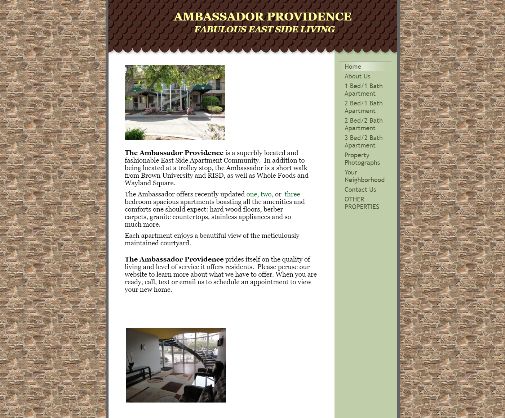
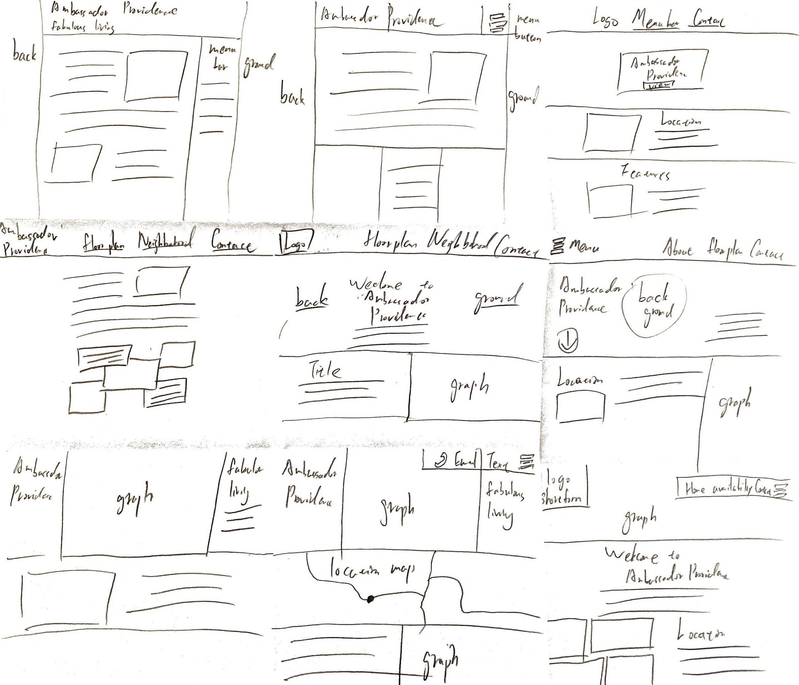
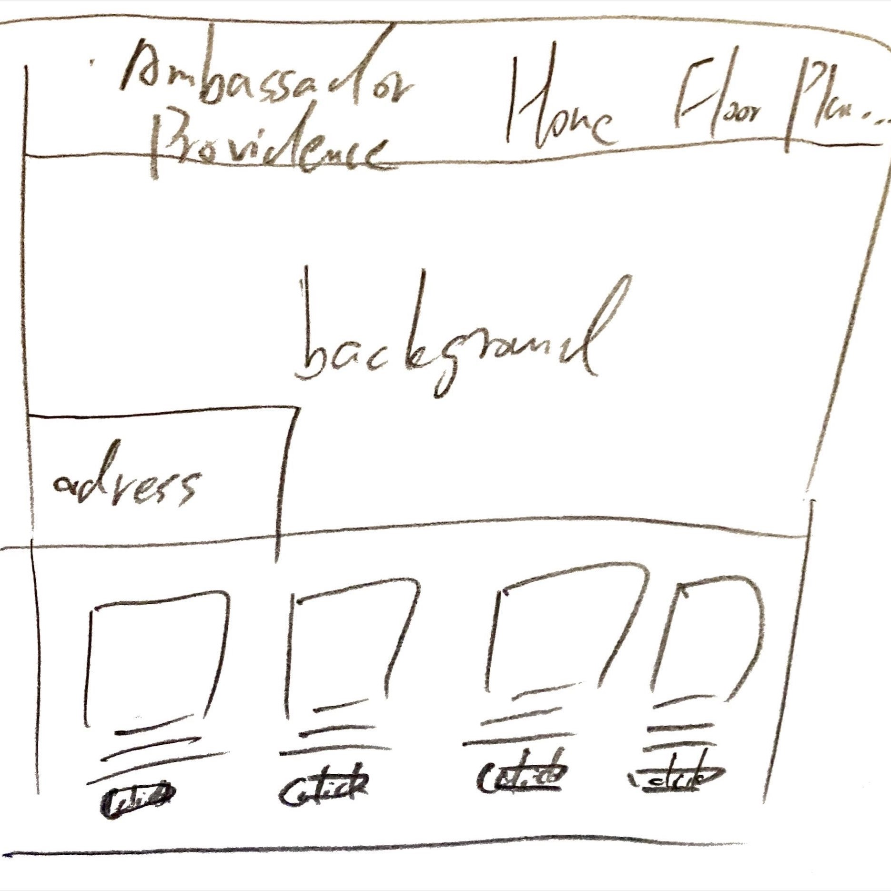
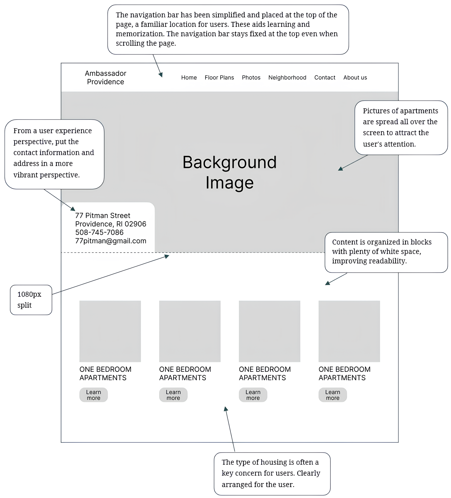
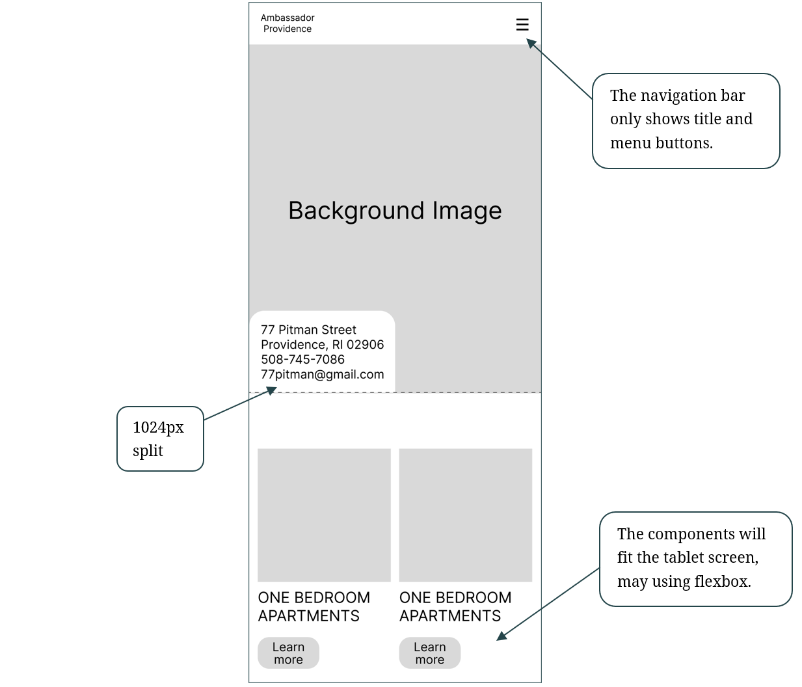
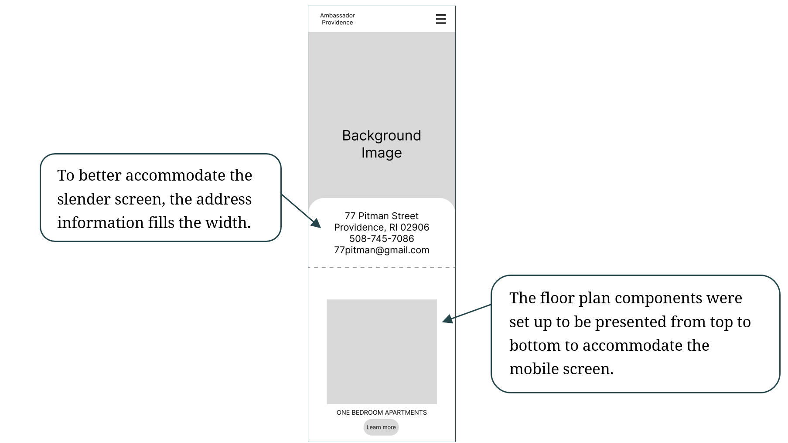
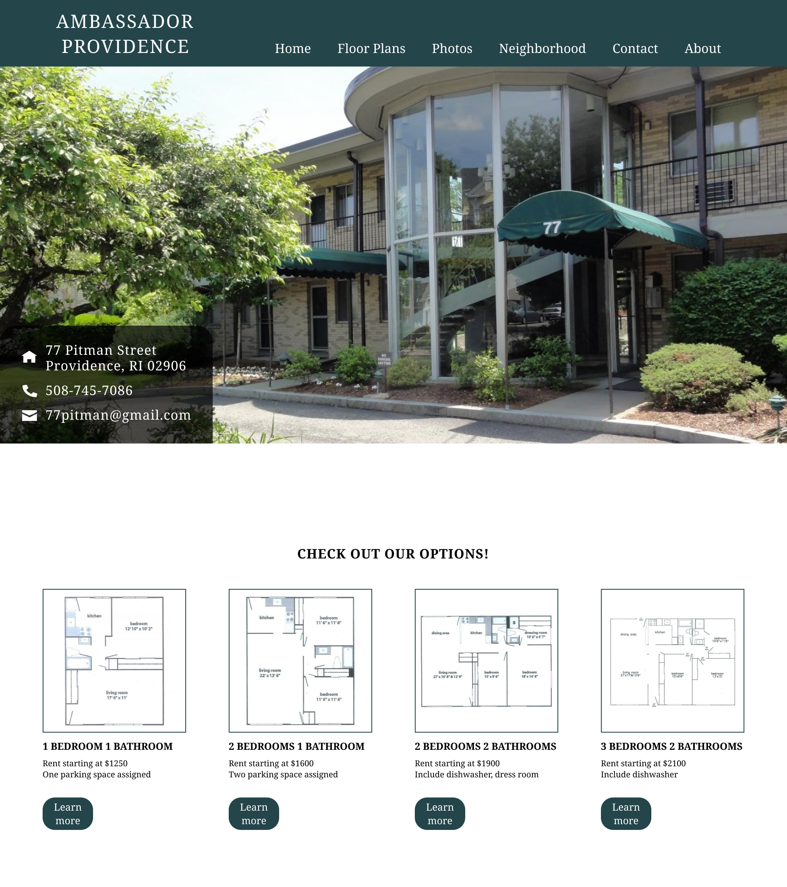
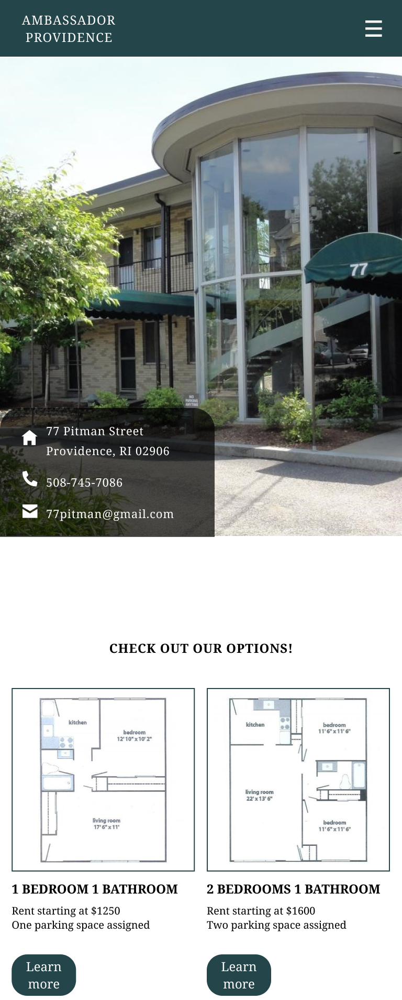
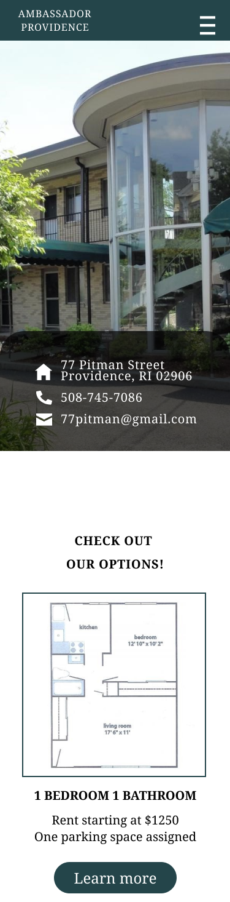
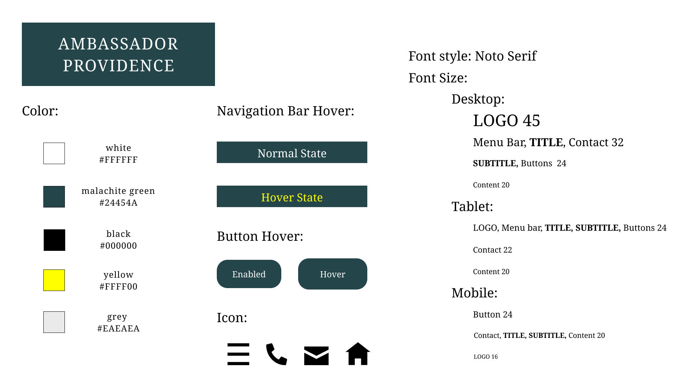

Responsive Redesign Assignment
A project showcasing responsive web design through the Ambassador Providence website case study. Responsive design is not just about making a website viewable on any device, it's about delivering an intuitive user experience. First exploring fundamental usability issues that impact user engagement.
Identifying Usability Problems
The Ambassador Providence Home Page was chosen for its initial promotional impact on users but lacks in UI/UX design (shown below).

Hover Below !
Visual Hierarchy Issues: Text blocks have dense fonts and lack spacing, reducing readability. Menu items blend into backgrounds, needing more contrast.
Layout and Navigation Challenges: Images and text lack proper spacing, cluttering the site. The homepage uses block layout, but the navigation bar scrolls away, reducing accessibility.
Grouping and Accessibility Concerns: The navigation menu is unclear and cramped, with some redundant information. Content areas are unorganized, merely stacked.
Accessibility problems: Acknowledging issues identified by WebAIM WAVE, the site needs improved headers, image alt texts, and navigation accessibility to enhance usability for all visitors.
Exploring usability issues highlights the significance of design in user experience, encompassing aesthetics, functionality, and accessibility. A step-by-step redesign process, from sketches to a final draft, emphasizes multi-device adaptability, including desktops and mobile devices.
Visual Redesign
Quick sketches serve to convey ideas effectively without needing details. These initial drawings allow designer to create possible solutions and provide a foundation for more detailed wireframes that follow. Please hover the block below to see the conversion from 9 speed sketches to the final sketch.


Using the final sketch as a reference, a more detailed wireframe was created for each screen size (phone, tablet, and desktop). Each Low-Fidelity wireframe was designed with different components to better accommodate different screen sizes. For each Low-Fidelity wireframe, there are notes labeling how it solves the usability issues mentioned above.
Desktop 1920x1080

Tablet 768x1024

Phone 375x667

The High Fidelity wireframe represents the polished final look of the product. It should contains the all components design, background and colors. The following images from left to right are High Fidelity wireframes for Desktop, Tablet, and Phone.



Integral to the development process is the adherence to a Visual Design Style Guide, a base for ensuring consistency across every visual element. This guide ensures that every element, from typography to color schemes, aligns with the design.

After going through the comprehensive process of the responsive web redesign task above, it started with evaluating usability issues and continued with the visual redesign. This process emphasized not only aesthetics, but also functionality and accessibility, with the consistency of the Visual Design Style Guide.
Responsive Redesign
Now it was time to bring the high-fidelity wireframe to life using HTML and CSS. To view the final design, check Redesign Page !! Please be curious to try all the components that appear to have responsive designs as well as different screen sizes!